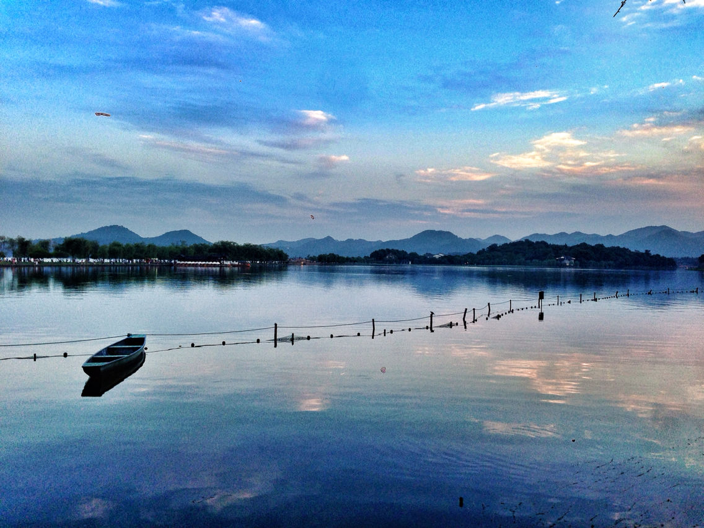
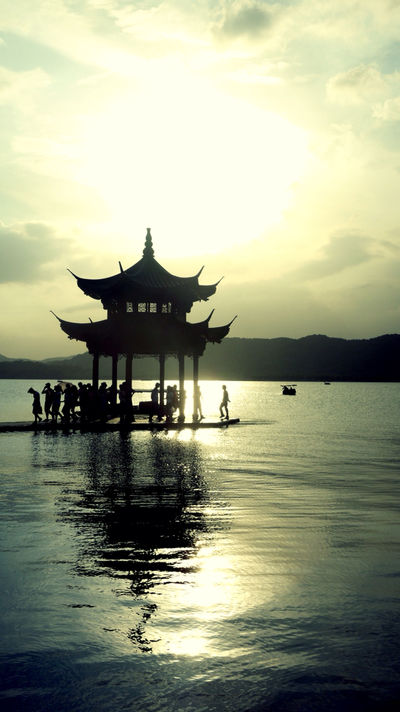
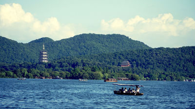

杭州美景



杭州概况
杭州，简称杭，浙江省省会，位于中国东南沿海、浙江省北部、钱塘江下游、京杭大运河南端，是浙江省的政治、经济、文化和金融中心，长江三角洲中心城市之一、长三角宁杭生态经济带节点城市、
中国重要的电子商务中心之一。截至2015年，杭州下辖9个区、2个县，代管2个县级市，总面积16596平方公里，建成区面积701.8平方公里，常住人口为901.8万人，城镇化率75.3%。
杭州自秦朝设县治以来已有2200多年的历史，曾是吴越国和南宋的都城，是中国七大古都之一。因风景秀丽，素有“人间天堂”的美誉。
杭州得益于京杭运河和通商口岸的便利，以及自身发达的丝绸和粮食产业，历史上曾是重要的商业集散中心。后来依托沪杭铁路等铁路线路的通车以及上海在进出口贸易方面的带动，轻工业发展迅速。
杭州人文古迹众多，西湖及其周边有大量的自然及人文景观遗迹。其中主要代表性的独特文化有西湖文化、良渚文化、丝绸文化、茶文化，以及流传下来的许多故事传说成为杭州文化代表。
2016年4月25日，《第一财经周刊》发布了新的中国城市分级排名榜单，这份榜单里杭州被定义为新一线城市。2018年世界短池游泳锦标赛、2022年杭州亚运会将在杭州举办。
大家印象
杭州风景美丽，人间天堂名不虚传。整个城市的绿化很好，空气很清新。最著名的景点就是西湖，西溪湿地也很舒服。
杭州的生活节奏不快，租借一辆自行车在市区骑行也很不错。
走进杭州
杭州，曾经因为一句“上有天堂，下有苏杭”而成为人们印象中天堂的化身，也曾因为“梁祝”、“白蛇传”而披上凄美浪漫的头纱。
那都是几百年前的事情啦。但庆幸的是，西子湖的一潭碧水、龙井灵隐的茶园茂林和杭州人内敛隽秀的个性，让杭州至今仍保持着大家闺秀的风范。
如果，把杭州比喻成一个人的话，那一定是一个有着明亮双眸、读过一些诗书、柔声细语、总是微笑偶尔落泪，且待字闺中的大小姐。
她有得天独厚却不张扬的美貌，浓妆淡抹总相宜的西湖、清幽的九溪十八涧、闹中取静的西溪湿地、闲云野鹤般存在的西泠印社，让几乎每一个来过的人都称赞不绝；
她也有耍小性子的时候，连续40天不放晴的梅雨天、越来越炎热难当的桑拿夏日、湿冷透骨的冬天，让生活在这儿的人，忍不住产生逃离的念头。
可一旦离开，就又会无限想念。 真似一个不着痕迹就能引人牵肠挂肚的小妮子！
最佳季节：3-5月。春季最佳。杭州四季景色各异，不过春季百花争艳，是杭州最美丽的时候。
建议游玩：3-5天。
三日游
DAY1 飞来峰 -灵隐寺 -岳王庙 -曲院风荷 -孤山 -白堤 -断桥 -西湖音乐喷泉
DAY2 长桥公园 -雷峰塔 -苏堤 -花港观鱼 -三潭印月 -柳浪闻莺 -吴山广场 -河坊街景区
DAY3 西溪湿地 -九溪烟树 -六和塔 -钱塘江大桥 -虎跑梦泉
四日游
DAY1 飞来峰 -灵隐寺 -岳王庙 -咬不得高祖生煎(岳庙店) -曲院风荷 -孤山 -白堤 -断桥 -西湖音乐喷泉
DAY2 长桥公园 -雷峰塔 -苏堤 -花港观鱼 -三潭印月 -柳浪闻莺 -吴山广场 -河坊街景区
DAY3 千岛湖 -千岛湖东南湖区 -黄山尖 -密山岛 -天池岛 -秀水人家(新安南路)
DAY4 千岛湖游船 -梅峰揽胜 -猴岛 -五龙岛 -神龙岛 -龙山岛
五日游
DAY1 虎跑梦泉 -六和塔 -钱塘江大桥 -九溪烟树 -宋城
DAY2 飞来峰 -灵隐寺 -岳王庙 -曲院风荷 -孤山 -白堤 -断桥 -宝石流霞 -西湖音乐喷泉
DAY3 长桥公园 -雷峰塔 -苏堤 -花港观鱼 -三潭印月 -柳浪闻莺 -吴山广场 -河坊街景区
DAY4 千岛湖 -千岛湖东南湖区 -黄山尖 -密山岛 -天池岛 -秀水人家(新安南路)
DAY5 千岛湖游船 -梅峰揽胜 -猴岛 -五龙岛 -神龙岛 -龙山岛
六日游
DAY1 吴山广场 -雷峰塔 -太子湾公园 -花港观鱼 -苏堤 -三潭印月 -钱王祠 -柳浪闻莺 -长桥公园
DAY2 飞来峰 -灵隐寺 -岳王庙 -咬不得高祖生煎(岳庙店) -曲院风荷 -西泠桥 -孤山 -平湖秋月
DAY3 虎跑梦泉 -杭州动物园 -六和塔 -钱塘江大桥 -宋城 -宋城千古情
DAY4 西溪国家湿地公园 -深潭口 -河渚 -福堤 -南山路 -河坊街景区 -南宋御街
DAY5 九溪烟树 -九溪十八涧 -龙井村 -龙井菜馆 -云栖竹径
DAY6 武林门码头 -浙江自然博物馆 -京杭大运河（杭州段）-拱宸桥 -中国扇博物馆 -小河直街